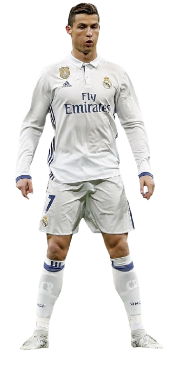

Mijn naam is Jody Mahmoud, ik ben 17 jaar oud en ik ben geboren in Syrië. Toen ik ongeveer acht jaar oud was, ben ik samen met mijn familie naar Nederland gekomen. Inmiddels woon ik hier al bijna negen jaar, en voel ik me echt thuis. 

Op school heb ik het NG vakkenpakket gekozen. Mijn favoriete vakken zijn wiskunde en informatica